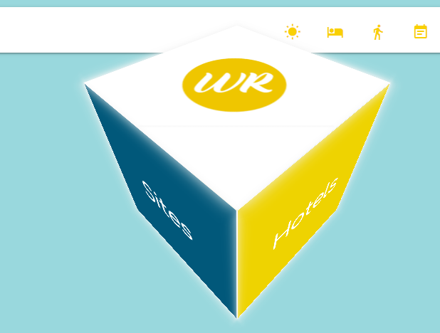
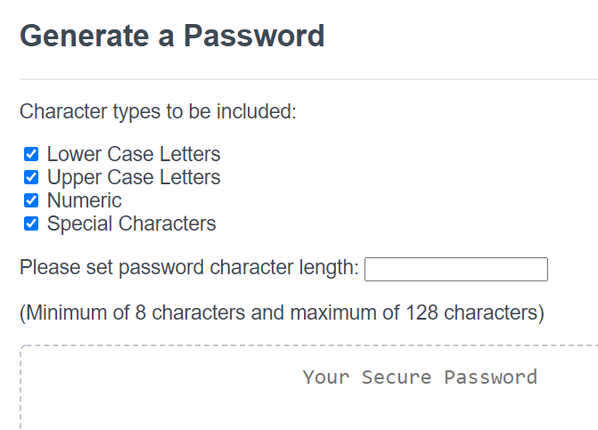

Portfolio
For this team project, we created an application with APIs that could be used to help people track their trip. It featured a calendar, to-do-list and APIs to find restaraunts, activities and hotels in the area. My contributions centered around the visual layout including the rotating and responsive cube. See below:

For this project, I created a password generator that allows a user to generate passwords to fit a given criteria. The user establishes the criteria including number of characters and what the password should consist of such as alpha, numeric and/or special characters. Here is the GitHub Link: https://github.com/jlbaldree/Password_Generator. You can also click on the hyperlink in the title to go directly to the application.

The coding quiz is an application that allows a user to take a timed quiz consisting of 5 questions. Once the timer runs out or all the questions have been answered, the user's score is displayed and he/she can enter their initials. If their score is high enough to make the top 3 scores, it is added to the high score list. Github Link: https://github.com/jlbaldree/Coding-Quiz.git